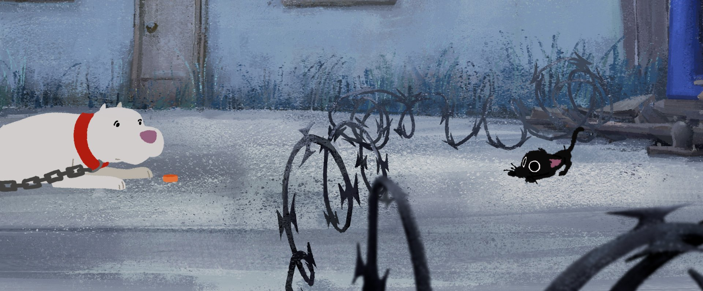

Котёнок
Юркий и осторожный. Он держится настороже, но любопытство снова и снова выводит его из укрытия.

Pixar SparkShorts · 2019
Ты больше не один.
Маленький котёнок и большой пёс учатся доверять друг другу в тихом городском дворе.
Читать историюИстория без спойлеров
Чёрный котёнок прячется среди коробок. Ему хватает крошечного уголка, чтобы наблюдать за большим и шумным двором.
Юркий и осторожный. Он держится настороже, но любопытство снова и снова выводит его из укрытия.
Большой пёс, которому тоже нужен друг. Его терпение помогает котёнку подойти ближе.
Режиссёр — Розана Салливан